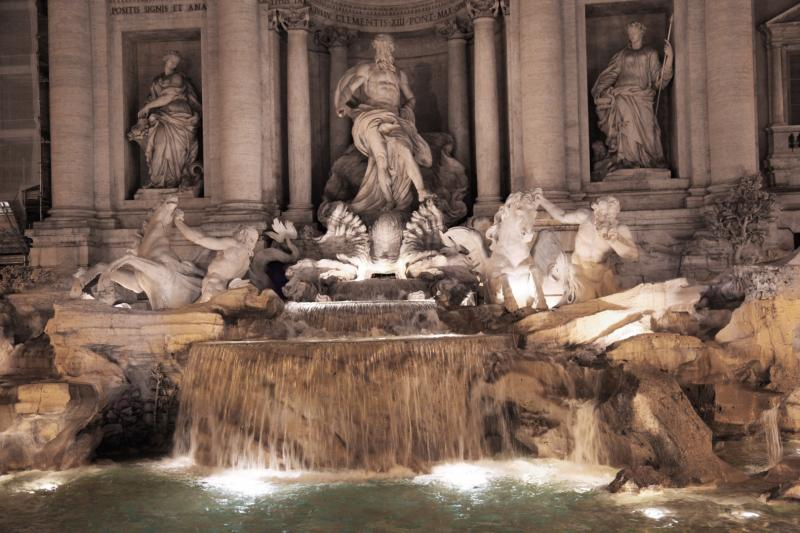
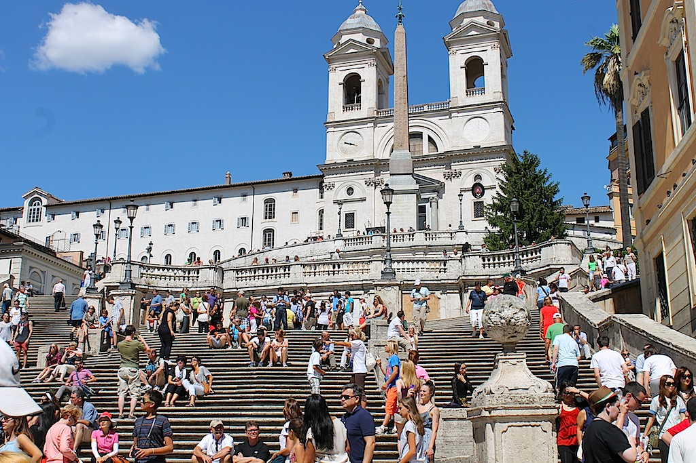
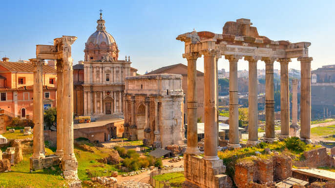

Colosseum on ehkä Rooman tunnetuin maamerkki. Antiikin Rooman aikaisessa amfiteatterissa järjestettiin ennen erilaisia näytöksiä kuten gladiaattorien taisteluja. Colosseum, joka valmistui vuonna 80, on maailman suurin amfiteatteri ja sen katsomoihin on mahtunut parhaimmillaan jopa yli 80 000 ihmistä.
Koska Colosseum kuuluu lähes kaikkien matkailijoiden ohjelmaan Roomassa, on siellä usein ruuhkaista. Siksi oma vierailua kannattaa ajoittaa esimerkiksi aikaiseen aamuun, jolloin ruuhkia on vähemmän.
Vatikaani on Rooman kaupungin sisällä sijaitseva minivaltio, jossa riittää nähtävää uskonnosta, taiteesta ja kulttuurista kiinnostuneelle matkailijalle. Vatikaanin suosituimpia nähtävyyksiä ovat Pietarinkirkko ja Pietarinaukio, Sikstuksen kappeli sekä Vatikaanin museokompleksi.
Fontana di Trevi eli Trevin suihkulähde on yksi koko maailman tunnetuimmista suihkulähteistä. Suihkulähde muodostuu noin 26 metriä korkeasta seinämästä, jonka edessä on vesiallas ja useita patsaita.
Espanjalaiset portaat ovat kuuluisat ulkoilmaportaat Roomassa ja suosittu kohtauspaikka keskellä vilkasta ostosaluetta. Espanjalaisissa portaissa on yhteensä 135 porrasta, jotka päättyvät Piazza di Spagnalle eli Espanjan aukiolle, jonka vuoksi myös portaita kutsutaan espanjalaisiksi portaiksi.
Forum Romanum oli muinaisen Rooman keskus ja alue oli merkittävä politiikan, uskonnon sekä kaupankäynnin keskittymä. Alueella pääsee tutustumaan Rooman historiaan lukuisten rakennuksien ja raunioiden kuten riemukaarien ja temppeleiden kautta.
Rooma on suuri metropoli täynnä hotelleja, siksi hotellin valintaa kannattaa miettiä. Eri alueet eroavat hintatasoltaan eri vuodenaikoina. Pahimmilla turisti kuukausina monet hotellit ovat ylihintaisia. Kaikkein edullisimmat ja sijainniltaan monin tavoin kätevimmät majapaikat löytyvät päärautatieaseman (Termini) ympäristöstä. Sen molemmilla puolilla on hosteleita, majataloja ja hotelleja. Näissä kortteleissa on mahdollista yöpyä omassa huoneessa alkaen alle 30 eurolla, mutta tällaiset hinnat ovat yleisimpiä talvikauden aikana ja muulloin kuin yleisinä loma-aikoina. Normaalimpi hinta kahden hengen halvalta huoneelta on 40–60 euroa.
Jokaisen yli 10-vuotiaan on Roomassa maksettava 3 euroa huoneestaan per yö, ja tämä koskee jokaista matkustajaa. Eli jos kaksi henkeä lähtee neljän vuorokauden matkalle kolmen tähden tai sitä vaatimattomampaan hotelliin, tulee käteisellä paikan päällä heti maksaa kaksi kertaa 12 euroa vielä huoneen hinnan lisäksi. Neljän tähden hotelleissa tämä marraskuun alussa 2019 noussut vero on 6 euroa ja viiden tähden hotelleissa 7 euroa per henkilö jokaiselta yöltä. Jos viipyy Roomassa yli 10 yötä, ei 11. yöstä eteenpäin enää tarvitse maksaa veroa.
Roomassa on enemmän ravintoloita kuin oikeastaan missään toisessa Euroopan kaupungissa, ja ulkona syöminen on siellä aamusta iltaan normaalia. Helpointa hinta-laatusuhteeltaan hyvän ravintolan löytäminen on päärautatieaseman tienoilta ja Trasteveresta, mutta vanhoissa kortteleissa edullisia varsinaisia ravintoloita on vähän.